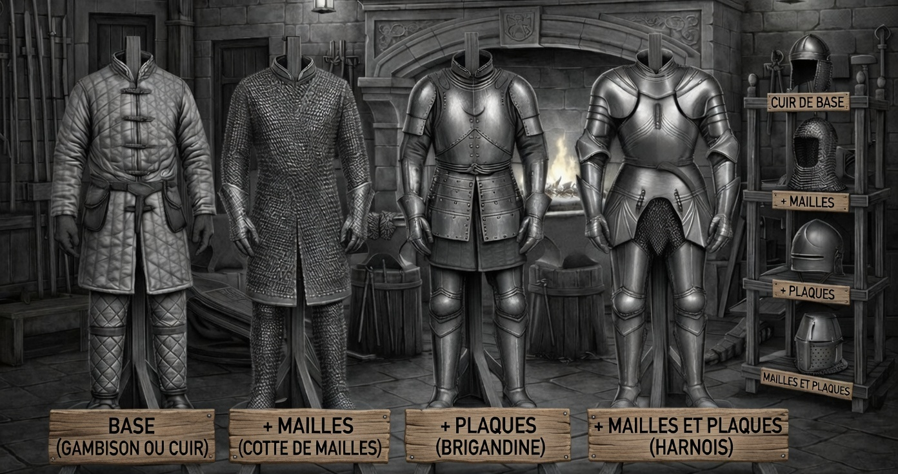

Le port d'une armure confère une protection supplémentaire (bonus de résistance) s'ajoutant à celle déjà possédée, mais impose généralement des contraintes, se traduisant par des malus cumulatifs sur certains talents.
Tout personnage souhaitant se protéger doit d'abord revêtir une armure légère (Gambison ou Cuir). Il peut ensuite y ajouter d'autres éléments (Mailles et/ou Plaques) pour en augmenter la Résistance et la Durabilité, au prix de malus cumulatifs.
| Armure (appellation) |
Durabilité | Bonus de Résistance | Malus (additionnels et cumulatifs) |
|---|---|---|---|
| Base (Gambison ou Cuir) |
6 | +1 (Tronc et Membres) | -1 aux jets de Magie (si le sort cible/inclut des ennemis) |
| + Mailles (Cotte de Mailles) |
+2 (Total 8) |
+1 (Tronc et Membres, Total +2) | ET -1 aux Talents : Mécanique et Fourberie.* |
| + Plaques (Brigandine) |
+2 (Total 8) |
+1 (Tronc et Membres, Total +2) | ET -1 aux Talents : Aptitude Féline et Athlétisme.** |
| + Mailles et Plaques (Harnois) |
+4 (Total 10) |
+2 (Tronc et Membres, Total +3) | ET -1 aux Talents : Mécanique, Fourberie, Aptitude Féline, Athlétisme et Perception. |
| + protection tête (Casque) |
= Type d'armure | = Type d'armure (tête) | -1 aux Talents : Perception et Aptitude Féline. |
* Les gants de mailles gênent le toucher et ajoutent une épaisseur encombrante aux mains. Les enlever supprime le malus mais aussi le bonus de résistance aux membres.
** La rigidité globale de l'armure entrave globalement les mouvements. Les gants ont des plaques qui recouvrent uniquement le dessus de la main, ne gênant pas l'utilisateur pour accomplir des tâches liées à la mécanique ou à la fourberie.

| Équipement | Durabilité | Bonus |
|---|---|---|
| Bouclier | 12 | +1 Défense vs Direct sauf dos si utilisé activement, ou +1 Défense vs Direct dos si porté dans le dos. |
Les armures et les boucliers ne sont pas éternels. Ils possèdent un score de Durabilité. Lorsque le personnage subit une attaque, l'armure perd 1 Point de Durabilité si elle est "nécessaire" pour éviter l'Impact.
L'usure s'applique si le score de Défense sans le bonus d'armure aurait entraîné une "Supériorité (Attaque > Défense)", mais que le bonus d'armure permet d'atteindre l'Égalité (Compteur) ou la Supériorité de Défense.
Si la Durabilité tombe à 0, l'armure est inutilisable et ne confère plus aucun bonus de Résistance jusqu'à réparation (Test de Mécanique ou Magie de Restauration).
Si une Arme manufacturée ou un Objet, autre que ceux listés dans la catégorie des focalisateurs magiques, est utilisée pour lancer un sort, appliquez un Malus de -1 aux résolutions du sort. Lancer un sort requiert une main libre ET un catalyseur (arme manufacturée, objet ou focalisateur magique). Les armes à deux mains permettent de libérer une main temporairement pour incanter, contrairement à l'usage simultané de deux objets (ex: épée + bouclier).
| Catégorie | Exemples | Contrainte / Avantage | Initiative |
|---|---|---|---|
| Distance | Arc, Arbalète, Fronde | Encombrement / Munitions. Nécessite généralement deux mains (sauf fronde/arbalète de poing). | Priorité 1 (si libre) ou Priorité 7 (si engagé au corps-à-corps). |
| Focalisateur Magique | Grimoire, Chapelet, Bâton. | Nécessite de tenir l'objet dans une main et d'avoir l'autre main de libre. | Priorité 2 (Magie Libre) ou Priorité 8 (Magie sous Pression). |
| Longue (arme utilisée à deux mains) | Lance, Épée à deux mains, Hache, Masse | Encombrement / Deux mains obligatoires. Empêche l'utilisation active d'un bouclier. | Priorité 4 |
| Moyenne (arme utilisée à une seule main) | Épée, Hache, Masse, Lance, Fléau | Permet l'usage d'un bouclier | Priorité 5 |
| Courte (arme de petite taille) | Dague, Épée courte, Torche, Bouclier | Permet l'usage d'un bouclier ou d'une seconde attaque avec une deuxième arme courte. | Priorité 6 |
| Catégorie | Exemples | Contrainte / Avantage | Initiative |
|---|---|---|---|
| Courte (arme de petite taille) | Poing, Pied, Saisie (réalisé par une créature de taille humain ou moins) | Permet l'usage d'un bouclier ou d'une seconde attaque avec une deuxième arme courte. | Priorité 6 |
| Variable (Monstres) | Morsure, Griffes, Queue, etc. | Soumis aux règles spécifique de la créature | Dépend de la taille du Monstre et de ses armes naturelles |
Note de rappel : La Priorité 3 manquante dans le tableau est réservée à l'action de Sprint (déplacement pur sans attaque).
Cette section présente les équipements spéciaux et reliques dont la confection exige des composants extraordinaires et / ou une maîtrise artisanale hors du commun.
La confection d'un objet magique suit des règles strictes qui limitent la puissance de ces artefacts dans le monde :
Description : Sculpté dans une branche de bois vivant, cet arc porte de jeunes pousses verdoyantes qui évoluent au fil des saisons. La corde, faite de fibres végétales tressées, guide la main par de légères pulsations qui cessent dès que la trajectoire est optimale.
Propriétés : Taillé dans le bois vivant d'un tréant, cet arc semble vibrer à l'approche du danger et guider la flèche avec une volonté propre.
Effet : +1 Attaque Directe.
Création : Bois de Tréant (Test Survie 1) et façonnage précis (Test Mécanique 1).
Description : La lame possède un fini irisé rappelant l'intérieur d'un coquillage, alternant entre le gris perle et le bleu pâle. Lorsqu'elle décrit un arc de cercle, l'arme semble être portée par une force centrifuge surnaturelle, rendant le mouvement circulaire plus rapide et plus difficile à parer qu'une frappe directe.
Propriétés : Tirant son nom de l'aspect arc de cercle d'un croissant de lune rappelant l'arc décrit par une attaque circulaire. Forgée dans un métal nommé "Fer Lunaire" (désignant son usage principal et non sa provenance).
Effet : +1 Attaque Circulaire.
Création : Utilisation de Fer Lunaire (Test Mécanique 1).
Description : Taillée dans un cristal de Fer Diamantin noir et facetté, cette pointe ne s'émousse jamais. Sa dureté absolue et son inertie parfaite guident le bras vers l'avant, transformant chaque attaque directe en une force de perforation dévastatrice.
Propriétés : Une arme dont la pointe est d'une dureté absolue, capable de percer les protections les plus denses.
Effet : +1 Attaque Directe.
Création : Utilisation de Fer Diamantin (Test Mécanique 1).
Description : Composée d'anneaux de Mithril si fins qu'elle ressemble à une étoffe de soie argentée au toucher. Ce métal est d'une souplesse telle qu'il ne peut être forgé en plaques rigides, mais il offre en retour une liberté de mouvement totale pour les tâches de précision.
Propriétés : Fabriquée en Mithril, un métal très léger à la souplesse et l'élasticité surnaturelle.
Effet : Annule le malus aux Talents : Mécanique et Fourberie, conféré par le port d'un cotte de mailles.
Création : Utilisation de Mithril (Test Mécanique 1) et forge spéciale (Secret Elfique).
Description : D'un aspect brut et anguleux, ces plaques massives d'Adamantite arborent un gris anthracite mat. Bien qu'elle offre une extraordinaire durabilité, son poids exige une force athlétique hors du commun pour ne pas s'effondrer sous sa propre protection.
Propriétés : Des plaques épaisses en Adamantite, conçue pour encaisser les chocs les plus violents.
Effet : Ajoute +1 en Résistance et +14 en Durabilité, en plus des bonus conférés par l'ajout de Plaques sur une armure.
Contrainte : Très lourd. Nécessite Athlétisme +1 (hors malus du port de l'armure) sinon l'armure est inutilisable en combat.
Création : Utilisation d'Adamantite (Test Mécanique 1) et forge spéciale (Secret Nain).
Description : Ce cuir peut arborer un rouge ardent doublé d'une chaleur résiduelle, ou un vert profond aux senteurs de forêt millénaire, ou tout autre, variant selon la nature du dragon originel. Contrairement aux cuirs habituels, cette protection semble entrer en résonance avec l'esprit du lanceur de sorts, supprimant toute entrave à ses incantations de combat.
Propriétés : Confectionnée à partir du cuir d'un dragon véritable.
Effet : Annule le malus aux lancement des sorts (pas de -1 aux jets de Magie si le sort cible/inclut des ennemis), conféré par le port d'une armure de cuir.
Création : Cuir et écailles de dragon véritable (Test Survie 1 pour dépecer et test Mécanique 1 pour la confectionner).
Description : Des dizaines d'écailles draconiques méticuleusements rivetées à une cotte de mailles ou une armure de cuir.
Propriétés : Confectionnée à partir des écailles d'un dragon véritable.
Effet : Confère à l'armure modifiée une Durabilité additionnelle de +10. L'armure hérite de l'immunité du monstre : elle protège totalement son porteur contre l'élément du dragon et ne subit aucune perte de durabilité (usure) face à ce type d'attaque magique ou environnementale.
Création : Écailles de dragon véritable incrustées sur une armure existante (Test Mécanique 1).
Description : Un bouclier massif taillé directement dans une unique écaille de dragon.
Propriétés : L'écaille d'un Dragon Véritable est extrêmement résistante et elle conserve l'affinité magique ainsi que la résistance absolue de la bête mythique.
Effet : Confère la défense d'un bouclier normal (+1 Défense vs Direct) mais possède une Durabilité exceptionnelle de 20. De plus, il annule purement et simplement (Échec Automatique) toute attaque frontale magique du même élément que le dragon.
Création : Façonné à partir d'une grande écaille de dragon véritable (Test Mécanique 1).
Description : La soie qui compose cette cape s'ajuste aux variations de lumière et de couleurs environnantes en reproduisant les teintes du sol ou des murs derrière le porteur. Elle agit comme un camouflage naturel qui facilite la dissimulation dans n'importe quel milieu.
Propriétés : Tissée à partir de fibres réagissant aux variations de lumière environnante.
Effet : Confère un bonus de +1 pour se cacher.
Création : Fil de soie d'araignée caméléon extrait de ses glandes (Test Survie 1) et tissage (Test Mécanique 1).
Description : Le cœur massif du prédateur suprême, saturé de l'essence magique de la création. Seul le combattant ayant porté le coup de grâce à la bête peut tenter de l'assimiler juste après l'avoir abattue.
Propriétés : Un artefact d'apothéose renfermant une magie de transmutation mythique, capable de réécrire l'espèce même de son hôte pour le lier à la lignée des Dragons.
Effet : L'espèce devient Dragon avec une métamorphose physique (l'utilisateur choisis lors de la transformation : la couleur des yeux, des écailles, l'aura, dictant l'immunité absolue). Confère un Bonus d'Armure de +3 (Tête, Tronc, Membres) avec 20 en Durabilité. Les plafonds mortels sont brisés : +1 en Athlétisme (le maximum devient +2) et +1 en Perception (le maximum devient +2). Accorde le Vol, la capacité de creuser la roche, la respiration aquatique, la vision dans le noir total, la perception des vibrations et l'accès à la Magie Innée.
Création : Obtenu en arrachant le cœur d'un Dragon Véritable fraîchement tué de ses propres mains.
Utilisation : Ingestion nécessitant un test de Résistance Tronc de Difficulté 3. En cas d'échec, le corps ne supporte pas la mutation et l'utilisateur meurt.
Description : Une préparation alchimique contenue dans une fiole, stabilisant l'essence de la bête mythique.
Propriétés : L'essence draconique purifiée et stabilisée, offrant une protection temporaire harmonisée avec la nature du monstre.
Effet : Confère une immunité totale liée à l'élément du dragon (ex. : immunité au feu pour des écailles rouges) pour une durée de 1 heure.
Création : Sang de dragon extrait et filtré (Test Savoir Académique 1 ou Survie 1).
Utilisation : Ingestion directe et sans danger, ne nécessitant aucun test.
Description : Le sang pur et épais du prédateur suprême, réduit par alchimie. Le liquide palpite d'une magie instable et violente.
Propriétés : La puissance brute et non filtrée de l'immunité d'un dragon, dangereuse pour un organisme non préparé.
Effet : Confère une immunité totale liée à l'élément du dragon (ex. : immunité au feu pour des écailles rouges) pour une durée de 1 jour complet (24 heures).
Création : Réduction alchimique complexe à partir de sang pur de dragon (Test Savoir Académique 1).
Utilisation : Ingestion risquée exigeant un test de Résistance Tronc de Difficulté 1. En cas d'échec, rejet violent (vomissements de sang) imposant un Désavantage (-1 à toutes les actions) et alitement incapacitant pour 1 jour complet pour s'en remettre.
Description : Contenu dans une fiole de cristal épais, ce liquide visqueux d'un bleu violacé est parcouru d'étincelles constantes. La fiole vibre légèrement au creux de la main, témoignant de la magie brute qui sature ce sang et qui s'apprête à modifier définitivement le flux spirituel de celui qui l'absorbe.
Propriétés : L'essence vitale d'un Ogre Mage est imprégnée d'une magie brute. Son ingestion modifie définitivement le flux spirituel de l'utilisateur.
Effet : Confère la capacité permanente de lancer des sorts sans nécessité l'usage d'une arme et annule le malus de catalyseur partiel.
Création : Une flasque de sang d'ogre mage dont on extrait l'essence (Test Savoir Académique 1).
Utilisation : Absorption et rituel complexe (Difficulté Saisie Tronc 4).
Description : L’apparence extérieure de ce grimoire est un mystère quotidien, changeant de format, de couleur et de texture de couverture sans prévenir. Lorsqu'on le consulte, l'encre s'anime pour réorganiser les textes et les schémas, affichant précisément le savoir recherché par son possesseur.
Propriétés : Un grimoire dont les pages sont magiquement imprégnées du savoir d'une bibliothèque entière.
Effet : Confère un bonus de +1 en Savoir Académique.
Création : Un grimoire vide, une grande bibliothèque, et un rituel magique (Difficulté Rituel Magique 2) qui absorbe tous les livres de la bibliothèque pour les imprimer magiquement dans le grimoire qui devient magique.